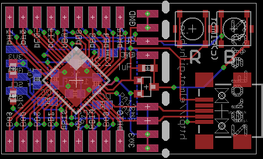

Very minimalistic MCU development board

- MCU: stm32f072cbu
- ARM Cortex M0, 48MHz, 16 KB RAM, 128 KB Flash
- 12x timers, 7x DMA
- 1x 16ch/12bit ADC, 1x 2ch/12bit DAC, two analog comparators
- 2x I2C, 2x SPI, 4x UART, 1x CAN
- Crystalles USB FS client
- Standard SWD interface for flashing and debugging
- VFQFN48 package
- USB DFU Bootloader
- Board features
- Detachable Mini-USB socket with RESET and BOOT0 tact buttons
- 23x37mm size, 23x23mm without USB socket
- Basic soldering skills required
- 37x GPIOs available
- Separate I2C pins with pull-up resistors placeholders
- 1x LED on board
- Several power and ground pins
- Ultra-low dropout LDO on board